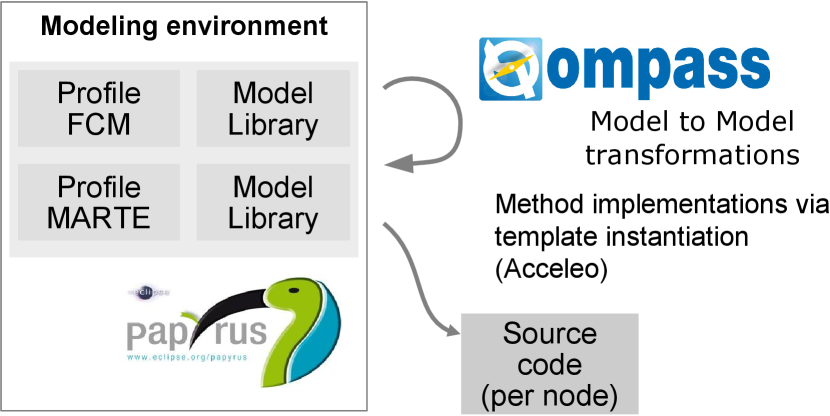

Qompass Overview
Qompass Designer is a component based modeling / middleware approach that is suitable
for embedded and real-time applications. The application modeling is based
on the Flex-eWare
component model (FCM). This component model is aligned with the OMG standard
(D&C), click here for more
information on the component model.
From model towards executable code
Technically, the application model is a UML model with the profiles
FCM and MARTE (we recommend to use the open
source UML editor Papyrus). The latter is the OMG standard for embedded and real-time systems.
The
transition from the model towards executable code is done by a sequence
of model transformations. These transformations include the template
instantiation of connectors from a model library. This instantiation
includes not only model elements, but also code by means
of Acceleo templates. The final code generation uses standard code generation
facilities of Papyrus. An overview of the approach is shown in the figure
below.

References